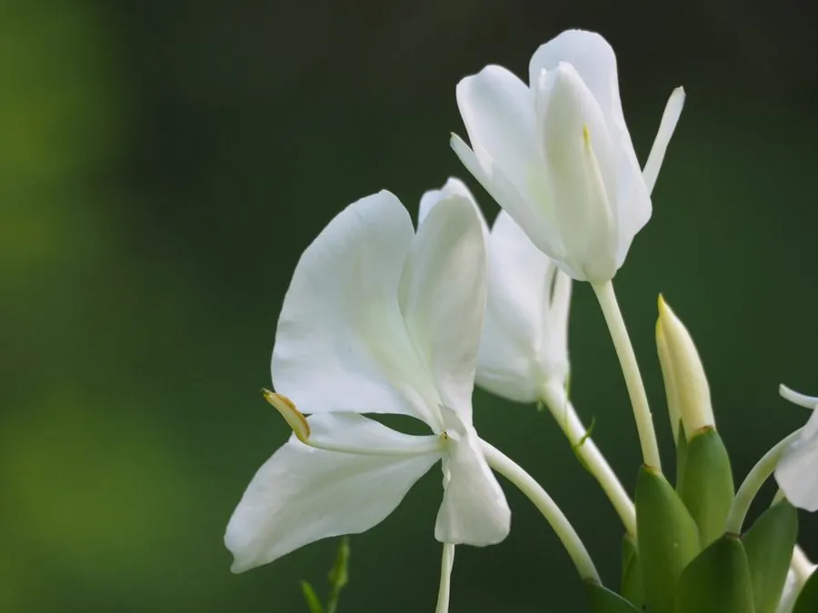

水生植物 · 植物界
姜花 Hedychium coronarium

姜科多年生湿生草本，花白色如蝶、香气浓郁，根状茎横走，常见于南方溪边湿地，是优良的切花与香花植物。
- 分类
- 门被子植物门纲木兰纲目姜目科姜科属姜花属
- 栖息环境
- 溪边、沟谷、湿地与林下阴湿处，可生于浅水或湿土
- 地理分布
- 原产亚洲热带，中国华南、西南及印度、东南亚有分布
- 保护级别
- 暂无评估；野生居群受湿地开发影响
物种志
姜花为姜科姜花属多年生草本，株高 1–2 米，地下具肥厚的根状茎。叶片披针形，长 20–40 厘米，互生，排成两列，形似美人蕉。穗状花序顶生，长 10–20 厘米，花白色，唇瓣宽大、中央带淡黄，形如展翅的蝴蝶，花期 7–10 月，香气浓郁，傍晚最盛；蒴果卵形。
姜花原产亚洲热带，中国华南、西南及印度、东南亚的溪边、沟谷湿地常见，适宜生于湿土或水深 0–10 厘米的浅水处，喜温暖、半阴至全阳环境。它的花序洁白芳香，是华南常见的切花与庭园香花，也常被妇女簪于发间。根状茎可提取芳香油，民间也入药，有祛风散寒、消肿止痛之效。栽培以分株繁殖为主，喜肥喜湿，冬季地上部枯萎后根状茎越冬。
形态与习性
- 株高1–2 米，叶片披针形排成两列
- 水深可生于 0–10 厘米浅水或湿土中
- 水质喜流动的清洁淡水，忌长期积水腐臭
- 花期7–10 月，穗状花序白色芳香
- 光照半阴至全阳，光足则花多香浓
- 繁殖根状茎分株，春秋均可进行
趣味知识
- 姜花的花朵形似白蝶，华南俗称“蝴蝶姜”，傍晚香气最浓。
- 它的花是常见切花，插一瓶可使满室生香，但花期仅两三天。
- 根状茎含挥发油，可提取香精，民间也用于祛风止痛。
- 在合适的水湿条件下它扩展很快，部分热带岛屿已将其视为入侵植物。